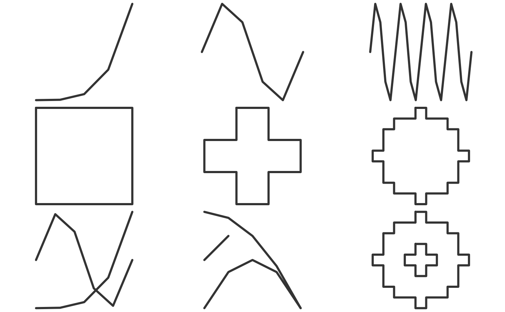

smoothr: spatial feature smoothing in R
Matt Strimas-Mackey
2018-03-21
Source:vignettes/smoothr.Rmd
This package arose out of an desire for an R tool for smoothing polygons, especially those coming from raster-to-polygon conversion, to make lines and polygons have more natural, aesthetically pleasing curves. ArcGIS has the Smooth Polygon tool that works nicely; however, I was unable to find an R equivalent.
Example data
This package comes with two simple spatial datasets in sf format to test the smoothing algorithms on. jagged_polygons contains 9 polygons with sharp corners begging to be smoothed out:

Notice that these polygons have a range of complexities, some have holes, and some are mutlipart polygons. I’ve added a few flags to distinguish between the different types.
#> Simple feature collection with 9 features and 4 fields
#> geometry type: GEOMETRY
#> dimension: XY
#> bbox: xmin: 0 ymin: 0 xmax: 1 ymax: 1
#> epsg (SRID): 4326
#> proj4string: +proj=longlat +datum=WGS84 +no_defs
#> id type hole multipart geometry
#> 1 1 polygon FALSE FALSE POLYGON ((0.4444444 0.55555...
#> 2 2 polygon FALSE FALSE POLYGON ((0.5555556 0.44444...
#> 3 3 polygon FALSE FALSE POLYGON ((0.5555556 0.11111...
#> 4 4 polygon FALSE FALSE POLYGON ((0.7854351 0.47743...
#> 5 5 polygon TRUE FALSE POLYGON ((0.5555556 0.22222...
#> 6 6 polygon TRUE FALSE POLYGON ((0.5555556 0.11111...
#> 7 7 polygon FALSE TRUE MULTIPOLYGON (((0.2222222 0...
#> 8 8 polygon FALSE TRUE MULTIPOLYGON (((0 0.1111111...
#> 9 9 polygon TRUE TRUE MULTIPOLYGON (((0.5555556 0...jagged_lines contains 9 polylines with disgustingly crooked edges.

Again, there’s a range of complexities, some lines form closed loops, and some are multipart.
#> Simple feature collection with 9 features and 4 fields
#> geometry type: GEOMETRY
#> dimension: XY
#> bbox: xmin: 0 ymin: 0 xmax: 1 ymax: 1
#> epsg (SRID): 4326
#> proj4string: +proj=longlat +datum=WGS84 +no_defs
#> id type closed multipart geometry
#> 1 1 line FALSE FALSE LINESTRING (0 0, 0.25 0.003...
#> 2 2 line FALSE FALSE LINESTRING (0 0.5, 0.2 0.97...
#> 3 3 line FALSE FALSE LINESTRING (0 0.5, 0.05 0.9...
#> 4 4 line TRUE FALSE LINESTRING (0.4444444 0.555...
#> 5 5 line TRUE FALSE LINESTRING (0.5555556 0.444...
#> 6 6 line TRUE FALSE LINESTRING (0.5555556 0.111...
#> 7 7 line FALSE TRUE MULTILINESTRING ((0 0, 0.25...
#> 8 8 line FALSE TRUE MULTILINESTRING ((0 0, 0.25...
#> 9 9 line TRUE TRUE MULTILINESTRING ((0.5555556...The final dataset that comes with this package, jagged_raster, is a simulated occurrence probability for a species, consisting of a spatially auto-correlated raster layer with values between 0 and 1. This raster can be used to experiment with smoothing polygons generated from rasters.
r <- jagged_raster
# plot
par(mar = c(0, 0, 0, 0))
plot(extent(r), col = NA)
plot(r, col = heat.colors(100), legend = FALSE, add = TRUE, box = FALSE)
Smoothing methods
Thus far, I’ve implemented two simple smoothing methods: Chaikin’s corner cutting algorithm and spline interpolation. Both are accessed with the smooth() function, and all methods work on spatial lines and polygons in sf and sp format.
Chaikin’s corner cutting algorithm
Chaikin’s corner cutting algorithm smooths by iteratively replacing every point by two new points: one 1/4 of the way to the next point and one 1/4 of the way to the previous point. Consult the references below for details, but essentially the idea is to iteratively cut off corners until the curve is smooth. I’ve found this method to produce fairly natural looking smooth curves, although they’re a little more “boxy” than I’d like, and the algorithm has the benefit of only requiring a single parameter: the number of smoothing iterations.
This method can be applied with smooth(x, method = "chaikin"). Here’s what this looks like for the polygons:
p_smooth_chaikin <- smooth(jagged_polygons, method = "chaikin")
par(mar = c(0, 0, 0, 0), oma = c(0, 0, 0, 0), mfrow = c(3, 3))
for (i in 1:nrow(jagged_polygons)) {
plot(st_geometry(jagged_polygons[i, ]), col = "grey40", border = NA)
plot(st_geometry(p_smooth_chaikin[i, ]), col = NA, border = "#E41A1C",
lwd = 2, add = TRUE)
}And for the lines:
l_smooth_chaikin <- smooth(jagged_lines, method = "chaikin")
par(mar = c(0, 0, 0, 0), oma = c(0, 0, 0, 0), mfrow = c(3, 3))
for (i in 1:nrow(jagged_lines)) {
plot(st_geometry(jagged_lines[i, ]), col = "grey20", lwd = 3)
plot(st_geometry(l_smooth_chaikin[i, ]), col = "#E41A1C", lwd = 2, add = TRUE)
}
Spline interpolation
This method applies a spline interpolation to the x and y coordinates independently using the built-in spline() function. For polygons (and closed lines), method = "periodic" is used to avoid getting a kink at the start/end of the curve defining the boundary. Unlike the corner cutting algorithm, this method results in a curve that passes through the vertices of the original curve, which may be a desirable feature. Unfortunately, this results in an unnaturally wiggly curve. Spline interpolation requires a parameter specifying the number of points to interpolate at, which can either be an absolute number or a relative increase in the number of vertices.
This method can be applied with smooth(x, method = "spline"). Here’s what this looks like for the polygons:
p_smooth_spline <- smooth(jagged_polygons, method = "spline")
par(mar = c(0, 0, 0, 0), oma = c(0, 0, 0, 0), mfrow = c(3, 3))
for (i in 1:nrow(jagged_polygons)) {
plot(st_geometry(p_smooth_spline[i, ]), col = NA, border = NA)
plot(st_geometry(jagged_polygons[i, ]), col = "grey40", border = NA,
add = TRUE)
plot(st_geometry(p_smooth_spline[i, ]), col = NA, border = "#E41A1C",
lwd = 2, add = TRUE)
}
And for the lines:
l_smooth_spline <- smooth(jagged_lines, method = "spline")
par(mar = c(0, 0, 0, 0), oma = c(0, 0, 0, 0), mfrow = c(3, 3))
for (i in 1:nrow(jagged_lines)) {
plot(st_geometry(l_smooth_spline[i, ]), col = NA)
plot(st_geometry(jagged_lines[i, ]), col = "grey20", lwd = 3, add = TRUE)
plot(st_geometry(l_smooth_spline[i, ]), col = "#E41A1C", lwd = 2, add = TRUE)
}
Raster-to-polygon conversion
The whole point of this smoothr business was to smooth out polygons generated from rasters, so let’s work through a quick example of that. Treating jagged_raster as the occurrence probability for a species, imagine we want to produce a range map for this species, showing where it occurs with at least 50% probability. We can convert the raster to a binary presence/absence map, then polygonize.
# pres/abs map
r_pa <- cut(r, breaks = c(-Inf, 0.5, Inf)) - 1
par(mar = c(0, 0, 0, 0))
plot(extent(r), col = NA)
plot(r_pa, col = c("white", "#4DAF4A"), legend = FALSE, add = TRUE, box = FALSE)
# polygonize
pa_poly <- rasterToPolygons(r_pa, function(x){x == 1}, dissolve = TRUE)
plot(pa_poly, col = NA, border = "grey20", lwd = 1.5, add = TRUE)
Finally, to make this more aesthetically pleasing, I’ll smooth out those sharp edges.
pa_poly_smooth <- smooth(pa_poly, method = "chaikin")
# plot
par(mar = c(0, 0, 0, 0))
plot(extent(r), col = NA)
plot(pa_poly_smooth, col = "#4DAF4A", border = "grey20", lwd = 1.5, add = TRUE)Not perfect, it still clearly looks like this range map came from a raster, but those slightly smoother corners are certainly easier on the eyes!
References
Chaikin’s corner cutting algorithm:
- Chaikin, G. An algorithm for high speed curve generation. Computer Graphics and Image Processing 3 (1974), 346–349
- http://graphics.cs.ucdavis.edu/education/CAGDNotes/Chaikins-Algorithm.pdf
- Where to find Python implementation of Chaikin’s corner cutting algorithm?
Spline interpolation: